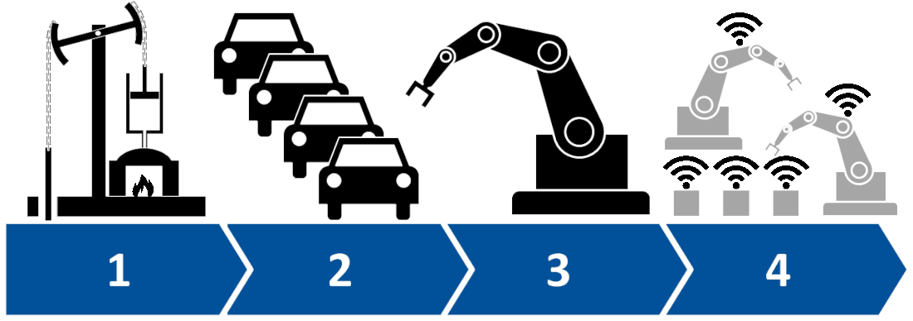

A quarta revolução industrial, ou Indústria 4.0, é uma nova mudança de paradigma na indústria mundial, que
engloba algumas tecnologias para automação e troca de dados onde terá um impacto mais profundo e exponencial do
que as revoluções anteriores, caracteriza-se, por um conjunto de tecnologias que permitem a fusão do mundo
físico, digital e biológico.

A quarta revolução industrial é um conceito de indústria proposto recentemente e que engloba as principais
inovações tecnológicas dos campos de automação, controle e tecnologia da informação, aplicadas aos processos de
manufatura.
A partir de Sistemas Cyber-Físicos, Internet das Coisas e Internet dos Serviços, os processos de
produção tendem a se tornar cada vez mais eficientes, autônomos e customizáveis. Isso significa um novo período no contexto das
grandes revoluções industriais. Com as fábricas inteligentes, diversas mudanças ocorrerão na forma em que os produtos serão
manufaturados, causando impactos em diversos setores do mercado.
O termo indústria 4.0 se originou a partir de um projeto de estratégias do governo alemão voltadas à tecnologia.
O termo foi usado pela primeira vez na Feira de Hannover em 2011. Em outubro de 2012 o grupo responsável pelo
projeto, ministrado por Siegfried Dais (Robert Bosch GmbH) e Kagermann (acatech) apresentou um relatório de
recomendações para o Governo Federal Alemão, a fim de planejar sua implantação. Então, em abril de 2013 foi
publicado na mesma feira um trabalho final sobre o desenvolvimento da indústria 4.0.
Seu fundamento básicoimplica que conectando máquinas, sistemas e ativos, as empresas poderão criar redes inteligentes ao longo de
toda a cadeia de valor que podem controlar os módulos da produção de forma autônoma.Ou seja, as fábricas inteligentes terão a capacidade
e autonomia para agendar manutenções, prever falhas nosprocessos e se adaptar aos requisitos e mudanças não planejadas na produção
Consiste na aquisição e tratamento de dados de forma praticamente instantânea, permitindo a tomada de decisões em tempo real.
Simulações já são utilizadas atualmente, assim como sistemas supervisórios. No entanto, a indústria 4.0 propõe a existência de uma cópia virtual das fabricas inteligentes, permitindo a rastreabilidade e monitoramento remoto de todos os processos por meio dos inúmeros sensores espalhados ao longo da planta.
A tomada de decisões poderá ser feita pelo sistema cyber-físico de acordo com as necessidades da produção em tempo real. Além disso, as máquinas não apenas receberão comandos, mas poderão fornecer informações sobre seu ciclo de trabalho.Logo, os módulos da fábrica inteligente trabalharão de forma descentralizada a fim de aprimorar osprocessos de produção.
Utilização de arquiteturas de software orientadas a serviços aliado ao conceito de Internet of Services.
Produção de acordo com a demanda, acoplamento e desacoplamento de módulos na produção, o que oferece flexibilidade para alterar as tarefas das máquinas facilmente.
Big Data e Analytics é um conjunto de dados com grande volume, que chegam com uma velocidade cada vez maior e
cada vez mais variados. Um software convencional não consegue organizar todas essas informações. Esta
organização de dados contribui para a realização de análises extremamente complexas e completas. Devido a
sua amplitude, as decisões podem ser tomadas de forma inteligente e só possível com a utilização de
softwares específicos.
Na manufatura, a utilização de Big Data surgiu há pouco tempo. Em resumo, ela otimiza a qualidade da
produção, economiza energia e melhora o serviço dos equipamentos. Esta coleta e avaliação de dados de
diversas fontes integradas (softwares, equipamentos e sistemas de produção) vai se tornar padrão, daqui
alguns anos, no apoio a tomada de decisões em tempo real.
A Internet das Coisas (Internet of Things) é uma tecnologia composta por objetos físicos que – geralmente –
possuem sensores e estão conectados a uma rede. Isso permite que eles possam enviar e receber dados a todo
momento. Eles são bem mais comuns do que se imagina, mas o seu conceito não deve ser confundido com objetos
que possuem um navegador instalado e podem acessar a internet. Por exemplo, uma geladeira que possui uma tela e
possibilita você acessar suas receitas e assistir tutoriais no Youtube não é um dispositivo IoT.
Atualmente, já existem geladeiras capazes de sincronizar o estoque de alimentos com a sua média de consumo e a
preparação de refeições. Com isso, ela envia notificações informando o momento certo de repor os alimentos.
E esta é uma de suas funções!
Trazendo para o ambiente industrial, hoje apenas alguns dos sensores e máquinas estão em rede e utilizam
computação incorporada. Basicamente, eles são organizados de forma vertical, na qual sensores, dispositivos
com inteligência limitada e controladores de automação alimentam um sistema de controle de processo de
fabricação abrangente.
Mas com a Internet das Coisas, mais dispositivos – e até mesmo produtos inacabados – serão enriquecidos por
tecnologias computacionais próprias e conectados usando tecnologias padrão. Isso permite que estes
dispositivos se comuniquem e interajam uns com os outros e com controladores mais centralizados, de acordo a
necessidade. Também descentraliza a análise e a tomada de decisões, permitindo respostas em tempo real.
Robôs não são uma novidade da Quarta Revolução Industrial, mas robôs inteligentes e pensantes sim. Os
primeiros robôs surgiram com a necessidade de aprimorar e dispensar tarefas repetitivas, mas eles estão se
tornando mais autônomos, flexíveis e cooperativos.
A diferença destes novos robôs está na integração de
sistemas como um todo. Utilizando sensores para tomar decisões com base no que está acontecendo, a
inteligência artificial integrada permite um aprendizado de máquina constante e exponencial.
Eventualmente, eles vão interagir – cada vez mais – uns com os outros e trabalhar em segurança lado a lado
com os humanos, apoiando-os conforme a necessidade. Além disso, esses robôs irão custar muito menos e terão
uma gama maior de recursos do que aqueles usados nas indústrias hoje.
A utilização de ferramentas de simulação proporciona uma visão do mundo físico construída no ambiente
virtual. A principal vantagem está na tomada de decisão, que ocorre antes de realizar um investimento caro,
complexo e, muitas vezes, demorado. Isso garante uma mudança assertiva e otimiza os recursos.
Hoje, já é muito comum realizar simulações em 3D de produtos, materiais e processos de produção. A ideia é que
no futuro, as simulações sejam usadas de forma mais extensae abrangente nas operações das fábricas.
Essas simulações vão levar dados em tempo real para espelhar o mundo físico em um modelo virtual, que pode incluir
máquinas, produtos e seres humanos.
Isso permite, por exemplo, que operadores testem e otimizem as configurações
da máquina para o próximoproduto em linha no mundo virtual antes da troca física. Isto reduz o tempo de configuração
da máquina – no mundo real – e aumenta a qualidade daquele serviço.
Hoje, a maioria dos sistemas de TI não são totalmente integrados. Empresas, fornecedores e clientes raramente estão intimamente ligados. Nem mesmo os departamentos como engenharia, produção e serviços compartilham informações entre si. Mas, com a Indústria 4.0, as funções e capacidades das empresas vão se tornar muito mais coesas, à medida que as redes de integração de dados universais entre empresas evoluírem e permitirem cadeias de valor verdadeiramente automatizadas.
Muitas empresas ainda dependem de sistemas de gerenciamento e produção desconectados ou fechados. Com o aumento da conectividade e o uso de protocolos de comunicação padrão fornecidos com a Indústria 4.0, a necessidade de proteger sistemas industriais críticos e linhas de fabricação contra ameaças de segurança cibernética aumenta dramaticamente. Como resultado, comunicações seguras e confiáveis, bem como gerenciamento sofisticado de identidade e acesso de máquinas e usuários são essenciais.
A Indústria 4.0 engloba as principais inovações tecnológicas nos campos da automação e tecnologia da informação aplicadas aos processos de manufatura. E tem como resultado a mudança da mão de obra humana por sistemas automatizados e robôs. Ela pode extinguir diversas profissões devido a essa substituição, por outro lado irá precisar cada vez mais de mão de obra qualificada, ou seja, ela impactará muito em nossa sociedade seja positivamente quando negativamente.
The 2016 World Economic Forum Misfires With Its Fourth Industrial Revolution Theme
Indústria 4.0: entenda o que é a quarta revolução industrial
Big Data na Indústria 4.0: quais são os impactos
2021